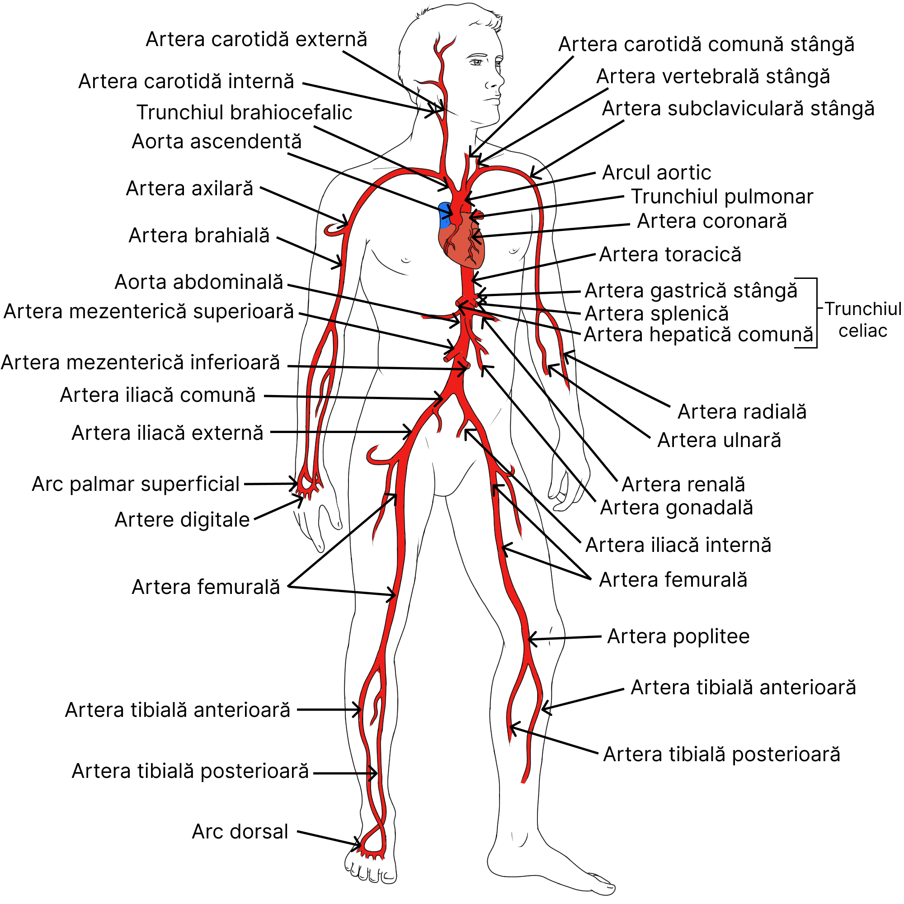

❤️ Inima
- Organ muscular cavitar, care acționează ca o pompă.
- Asigură mișcarea continuă a sângelui prin vasele de sânge.
Transportă oxigenul, substanțele nutritive și elimină deșeurile.
Sistemul circulator este un ansamblu de organe și vase de sânge care asigură circulația sângelui în organism. Acesta are rolul de a transporta oxigenul, substanțele nutritive, hormonii și alte elemente esențiale către celule, precum și de a prelua deșeurile metabolice pentru eliminare. Sistemul circulator este format din inimă, vasele de sânge (artere, vene și capilare) și sânge.
Circulația sângelui se realizează prin sistemul circulator, care este alcătuit din:
Sunt tuburi prin care circulă sângele, fiind de mai multe tipuri:
Situată în cavitatea toracică, între cei doi plămâni.
Sunt tuburi prin care circulă sângele, fiind de mai multe tipuri:
La baza arterelor se află valve semilunare (sigmoide), ce nu permit sângelui să se întoarcă spre inimă.
Valvele în cuib de rândunică împiedică întoarcerea sângelui spre capilare.
Circulația mare transportă sângele oxigenat de la inimă către toate celulele corpului și aduce sângele cu dioxid de carbon înapoi la inimă.
Traseul sângelui:
Vₛ = sânge bogat în oxigen | Aᴰ = sânge bogat în dioxid de carbon
Circulația mică transportă sângele cu dioxid de carbon de la inimă către plămâni și aduce sângele oxigenat înapoi la inimă.
Traseul sângelui:
V₀ = sânge bogat în dioxid de carbon | Aₛ = sânge bogat în oxigen
| Boală | Cauze | Manifestări | Prevenire |
|---|---|---|---|
| Varicele |
|
|
|
| Accident vascular |
|
|
|
| Infarct miocardic |
|
|
|
| Ateroscleroza |
|
|
|
| Hipertensiunea arterială |
|
|
|